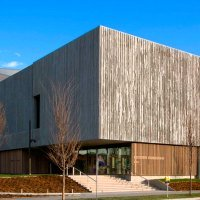
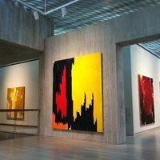

Welcome to the Clyfford Still | Museum
At the Clyfford Still Museum you’ll enjoy nine beautiful galleries of Clyfford Still’s art, historic photos and letters from the Clyfford Still Archives, an interactive timeline, dozens of videos and books, a pair of tranquil outdoor terraces, views into our storage and conservation areas, and shopping. We look forward to welcoming you!
Pre-registration is always required for groups of ten or more and field trips/school groups, including on free days.
Highlights from the Collection (Early 2019)
Clyfford Still & Photography is surrounded by a new display of the permanent collection installed throughout all of the Lanny and Sharon Martin Galleries. Spanning the artist’s 60-year career, this presentation features approximately 35 paintings, 35 works on paper, and a sculpture by Still. The mostly chronological narrative begins in the 1920s with traditional landscape subjects and Depression-era figure studies that transform into quasi-abstractions. These culminate with Still’s groundbreaking wartime abstractions and monumental late paintings that show the artist at the height of his powers.
Clyfford Still & Photography
Although Clyfford Still regarded photography primarily as a record, the medium played a distinctive and under-appreciated role in Clyfford Still’s biography and work. Clyfford Still & Photography is the first exhibition to explore this subject in depth and from different historical and critical perspectives. Nearly 70 photos from the Clyfford Still Archives (which holds some 23,000 photographic images) ranging in date from 1905 until the mid-1970s are included in the exhibition, along with six comparative paintings and other related archival materials such as photography books, magazine clippings, and ephemera.